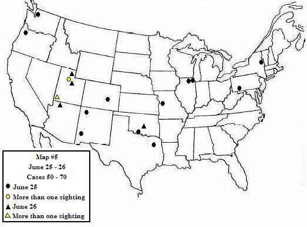
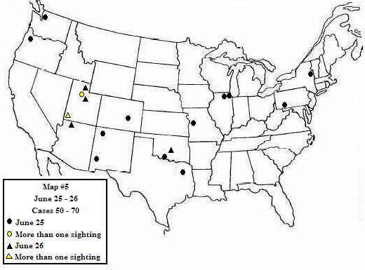
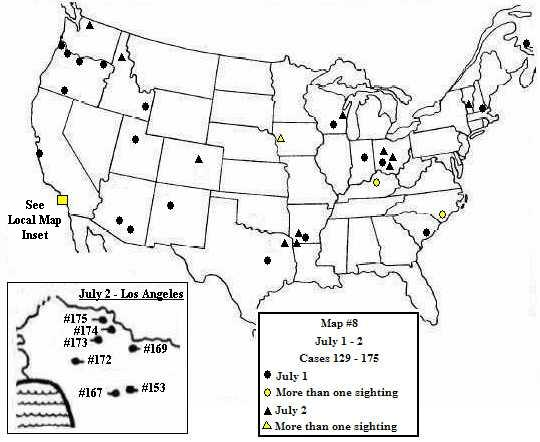
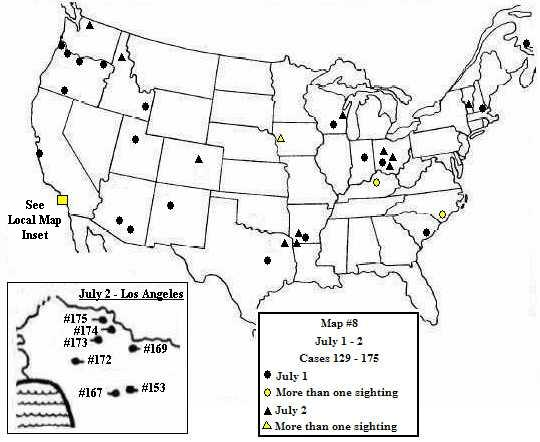

La vague d'ovnis de est peut-être la plus fascinante de toutes à examiner en raison de sa position unique au tout début de la période contemporaine de l'activité ovni dans ce pays. Il n'y avait aucune "attitude" envers les ovnis en juin . Il n'y avait aucun préjugé, idées reçues, aucune "politique" de la part de la presse ou du public, ou de la part de quelconques des agences officielles, et certainement aucun schéma n'existait concernant le phénomène avec lequel des comparaisons pourraient être faites. Peu de personnes se souvenaient des signalements de "fusées fantômes" au-dessus de la Suède durant l'été , et ce ne fut que pendant la crête de la vague de , les 6 et 7 juillet, que de quelconques liens furent faits avec ces phénomènes antérieurs. Quelques vétérans de la 2de guerre mondiale, qui avaient observé des "foo fighters" au-dessus de l'Allemagne et dans le Pacifique Sud pendant la guerre, se souvenaient maintenant de ces incidents précédents au moment où les signalements de soucoupes volantes se répandaient largement. Mais pour la plupart des témoins, l'expérience d'observer des manifestations aériennes étranges était complètement sans précédent et profondément déroutante.
Nous savons maintenant qu'après on pouvait s'attendre à ce qu'un témoin d'ovni puisse avoir peur de signaler une publiquement observation par peur que ne s'ensuive ridicule et intimidation. Ceci est une réaction we have come to expect, une des nombreuses complexités psychologiques du phénomène qui has developed out of prevailing public and official attitudes over a long period of time. Mais il n'y avait pas de tels précédents pour créer ce type de peur ; ces témoins avaient vu quelque chose d'irracontable et leur peur était celle de l'inconnu, une réaction à quelque chose de totalement nouveau et innatendu. Il n'y avait pas de place, hors de la science-fiction, pour ce type d'expérience inexplicable : l'apparence d'un phénomène nouveau n'était pas simplement effrayante, elle allait à l'encontre de tout sens commun, et si quelque chose dans le vécu de quelqu'un n'a aucun sens, il est peu probable que ce vécu soit rendu public, du moins pas avant qu'il soit découvert que d'autres aient partagé la même expérience déroutante. Et so to many, it must have come as something of a relief to read of l'observation de Kenneth Arnold, and to discover that they had not taken leave of their senses and were not the only ones to have come face to face with something they were quite unable to explain or understand.

 

 
